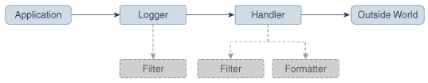
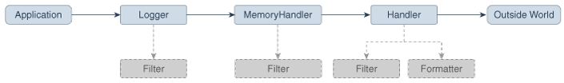

7 Java Logging Overview
The Java Logging APIs, contained in the package java.util.logging, facilitate software servicing and maintenance at customer sites by producing log reports suitable for analysis by end users, system administrators, field service engineers, and software development teams. The Logging APIs capture information such as security failures, configuration errors, performance bottlenecks, and/or bugs in the application or platform.
The core package includes support for delivering plain text or XML-formatted log records to memory, output streams, consoles, files, and sockets. In addition, the logging APIs are capable of interacting with logging services that already exist on the host operating system.
Topics
- Overview of Control Flow
- Log Levels
- Loggers
- Logging Methods
- Handlers
- Formatters
- The LogManager
- Configuration File
- Default Configuration
- Dynamic Configuration Updates
- Native Methods
- XML DTD
- Unique Message IDs
- Security
- Configuration Management
- Packaging
- Localization
- Remote Access and Serialization
- Java Logging Examples
- Appendix A: DTD for XMLFormatter Output
Overview of Control Flow
Applications make logging calls on Logger objects. Logger objects are organized in a hierarchical namespace and child Logger objects may inherit some logging properties from their parents in the namespace.
Applications make logging calls on Logger objects. These Logger objects allocate LogRecord objects which are passed to Handler objects for publication. Both Logger and Handler objects may use logging Level objects and (optionally) Filter objects to decide if they are interested in a particular LogRecord object. When it is necessary to publish a LogRecord object externally, a Handler object can (optionally) use a Formatter object to localize and format the message before publishing it to an I/O stream.
Figure 7-1 Java Logging Control Flow
Each Logger object keeps track of a set of output Handler objects. By default all Logger objects also send their output to their parent Logger. But Logger objects may also be configured to ignore Handler objects higher up the tree.
Some Handler objects may direct output to other Handler objects. For example, the MemoryHandler maintains an internal ring buffer of LogRecord objects, and on trigger events, it publishes its LogRecord object through a target Handler. In such cases, any formatting is done by the last Handler in the chain.
Figure 7-2 Java Logging Control Flow with MemoryHandler
The APIs are structured so that calls on the Logger APIs can be cheap when logging is disabled. If logging is disabled for a given log level, then the Logger can make a cheap comparison test and return. If logging is enabled for a given log level, the Logger is still careful to minimize costs before passing the LogRecord into the Handler. In particular, localization and formatting (which are relatively expensive) are deferred until the Handler requests them. For example, a MemoryHandler can maintain a circular buffer of LogRecord objects without having to pay formatting costs.
Log Levels
Each log message has an associated log Level object. The Level gives a rough guide to the importance and urgency of a log message. Log Level objects encapsulate an integer value, with higher values indicating higher priorities.
The Level class defines seven standard log levels, ranging from FINEST (the lowest priority, with the lowest value) to SEVERE (the highest priority, with the highest value).
Loggers
As stated earlier, client code sends log requests to Logger objects. Each logger keeps track of a log level that it is interested in, and discards log requests that are below this level.
Logger objects are normally named entities, using dot-separated names such as java.awt. The namespace is hierarchical and is managed by the LogManager. The namespace should typically be aligned with the Java packaging namespace, but is not required to follow it exactly. For example, a Logger called java.awt might handle logging requests for classes in the java.awt package, but it might also handle logging for classes in sun.awt that support the client-visible abstractions defined in the java.awt package.
In addition to named Logger objects, it is also possible to create anonymous Logger objects that don't appear in the shared namespace. See the Security section.
Loggers keep track of their parent loggers in the logging namespace. A logger's parent is its nearest extant ancestor in the logging namespace. The root logger (named "") has no parent. Anonymous loggers are all given the root logger as their parent. Loggers may inherit various attributes from their parents in the logger namespace. In particular, a logger may inherit:
-
Logging level: If a logger's level is set to be null, then the logger will use an effective Level that will be obtained by walking up the parent tree and using the first non-null Level.
-
Handlers: By default, a Logger will log any output messages to its parent's handlers, and so on recursively up the tree.
-
Resource bundle names: If a logger has a null resource bundle name, then it will inherit any resource bundle name defined for its parent, and so on recursively up the tree.
Logging Methods
The Logger class provides a large set of convenience methods for generating log messages. For convenience, there are methods for each logging level, named after the logging level name. Thus rather than calling logger.log(Level.WARNING, ...), a developer can simply call the convenience method logger.warning(...).
There are two different styles of logging methods, to meet the needs of different communities of users.
First, there are methods that take an explicit source class name and source method name. These methods are intended for developers who want to be able to quickly locate the source of any given logging message. An example of this style is:
void warning(String sourceClass, String sourceMethod, String msg);Second, there are a set of methods that do not take explicit source class or source method names. These are intended for developers who want easy-to-use logging and do not require detailed source information.
void warning(String msg);For this second set of methods, the Logging framework will make a "best effort" to determine which class and method called into the logging framework and will add this information into the LogRecord. However, it is important to realize that this automatically inferred information may only be approximate. Virtual machines perform extensive optimizations when just-in-time compiling and may entirely remove stack frames, making it impossible to reliably locate the calling class and method.
Handlers
Java SE provides the following Handler classes:
-
StreamHandler: A simple handler for writing formatted records to an OutputStream.
-
ConsoleHandler: A simple handler for writing formatted records to System.err
-
FileHandler: A handler that writes formatted log records either to a single file, or to a set of rotating log files.
-
SocketHandler: A handler that writes formatted log records to remote TCP ports.
-
MemoryHandler: A handler that buffers log records in memory.
It is fairly straightforward to develop new Handler classes. Developers requiring specific functionality can either develop a handler from scratch or subclass one of the provided handlers.
Formatters
Java SE also includes two standard Formatter classes:
-
SimpleFormatter: Writes brief "human-readable" summaries of log records.
-
XMLFormatter: Writes detailed XML-structured information.
As with handlers, it is fairly straightforward to develop new formatters.
The LogManager
There is a global LogManager object that keeps track of global logging information. This includes:
-
A hierarchical namespace of named Loggers.
-
A set of logging control properties read from the configuration file. See the section Configuration File.
There is a single LogManager object that can be retrieved using the static LogManager.getLogManager method. This is created during LogManager initialization, based on a system property. This property allows container applications (such as EJB containers) to substitute their own subclass of LogManager in place of the default class.
Configuration File
The logging configuration can be initialized using a logging configuration file that will be read at startup. This logging configuration file is in standard java.util.Properties format.
Alternatively, the logging configuration can be initialized by specifying a class that can be used for reading initialization properties. This mechanism allows configuration data to be read from arbitrary sources, such as LDAP and JDBC. See the Configuration File section.
There is a small set of global configuration information. This is specified in the description of the LogManager class and includes a list of root-level handlers to install during startup.
The initial configuration may specify levels for particular loggers. These levels are applied to the named logger and any loggers below it in the naming hierarchy. The levels are applied in the order they are defined in the configuration file.
The initial configuration may contain arbitrary properties for use by handlers or by subsystems doing logging. By convention, these properties should use names starting with the name of the handler class or the name of the main Logger for the subsystem.
For example, the MemoryHandler uses a property java.util.logging.MemoryHandler.size to determine the default size for its ring buffer.
Default Configuration
The default logging configuration that ships with the JRE is only a default and can be overridden by ISVs, system administrators, and end users.
The default configuration makes only limited use of disk space. It doesn't flood the user with information, but does make sure to always capture key failure information.
The default configuration establishes a single handler on the root logger for sending output to the console.
Dynamic Configuration Updates
Programmers can update the logging configuration at run time in a variety of ways:
-
FileHandler, MemoryHandler, and ConsoleHandler objects can all be created with various attributes.
-
New Handler objects can be added and old ones removed.
-
New Logger object can be created and can be supplied with specific Handlers.
-
Level objects can be set on target Handler objects.
Native Methods
There are no native APIs for logging.
Native code that wishes to use the Java Logging mechanisms should make normal JNI calls into the Java Logging APIs.
XML DTD
The XML DTD used by the XMLFormatter is specified in Appendix A: DTD for XMLFormatter Output.
The DTD is designed with a <log> element as the top-level document. Individual log records are then written as <record> elements.
Note that in the event of JVM crashes it may not be possible to cleanly terminate an XMLFormatter stream with the appropriate closing </log>. Therefore, tools that are analyzing log records should be prepared to cope with un-terminated streams.
Unique Message IDs
The Java Logging APIs do not provide any direct support for unique message IDs. Those applications or subsystems requiring unique message IDs should define their own conventions and include the unique IDs in the message strings as appropriate.Security
The principal security requirement is that untrusted code should not be able to change the logging configuration. Specifically, if the logging configuration has been set up to log a particular category of information to a particular Handler, then untrusted code should not be able to prevent or disrupt that logging.
The security permission LoggingPermission controls updates to the logging configuration.
Trusted applications are given the appropriate LoggingPermission so they can call any of the logging configuration APIs. Untrusted applets are a different story. Untrusted applets can create and use named loggers in the normal way, but they are not allowed to change logging control settings, such as adding or removing handlers, or changing log levels. However, untrusted applets are able to create and use their own "anonymous" loggers, using Logger.getAnonymousLogger. These anonymous loggers are not registered in the global namespace, and their methods are not access-checked, allowing even untrusted code to change their logging control settings.
The logging framework does not attempt to prevent spoofing. The sources of logging calls cannot be determined reliably, so when a LogRecord is published that claims to be from a particular source class and source method, it may be a fabrication. Similarly, formatters such as the XMLFormatter do not attempt to protect themselves against nested log messages inside message strings. Thus, a spoof LogRecord might contain a spoof set of XML inside its message string to make it look as if there was an additional XML record in the output.
In addition, the logging framework does not attempt to protect itself against denial of service attacks. Any given logging client can flood the logging framework with meaningless messages in an attempt to conceal some important log message.
Configuration Management
The APIs are structured so that an initial set of configuration information is read as properties from a configuration file. The configuration information may then be changed programatically by calls on the various logging classes and objects.
In addition, there are methods on LogManager that allow the configuration file to be re-read. When this happens, the configuration file values will override any changes that have been made programatically.
Packaging
All of the logging class are in the java.* part of the namespace, in the java.util.logging package.
Localization
Log messages may need to be localized.
Each logger may have a ResourceBundle name associated with it. The corresponding ResourceBundle can be used to map between raw message strings and localized message strings.
Normally, formatters perform localization. As a convenience, the Formatter class provides a formatMessage method that provides some basic localization and formatting support.
Remote Access and Serialization
As with most Java platform APIs, the logging APIs are designed for use inside a single address space. All calls are intended to be local. However, it is expected that some handlers will want to forward their output to other systems. There are a variety of ways of doing this:
Some handlers (such as the SocketHandler) may write data to other systems using the XMLFormatter. This provides a simple, standard, inter-change format that can be parsed and processed on a variety of systems.
Some handlers may wish to pass LogRecord objects over RMI. The LogRecord class is therefore serializable. However, there is a problem in how to deal with the LogRecord parameters. Some parameters may not be serializable and other parameters may have been designed to serialize much more state than is required for logging. To avoid these problems, the LogRecord class has a custom writeObject method that converts the parameters to strings (using Object.toString()) before writing them out.
Most of the logging classes are not intended to be serializable. Both loggers and handlers are stateful classes that are tied into a specific virtual machine. In this respect they are analogous to the java.io classes, which are also not serializable.
Java Logging Examples
Simple Use
The following is a small program that performs logging using the default configuration.
This program relies on the root handlers that were established by the LogManager based on the configuration file. It creates its own Logger object and then makes calls to that Logger object to report various events.
package com.wombat;
import java.util.logging.*;
public class Nose {
// Obtain a suitable logger.
private static Logger logger = Logger.getLogger("com.wombat.nose");
public static void main(String argv[]) {
// Log a FINE tracing message
logger.fine("doing stuff");
try {
Wombat.sneeze();
} catch (Exception ex) {
// Log the exception
logger.log(Level.WARNING, "trouble sneezing", ex);
}
logger.fine("done");
}
}Changing the Configuration
Here's a small program that dynamically adjusts the logging configuration to send output to a specific file and to get lots of information on wombats. The pattern %t means the system temporary directory.
public static void main(String[] args) {
Handler fh = new FileHandler("%t/wombat.log");
Logger.getLogger("").addHandler(fh);
Logger.getLogger("com.wombat").setLevel(Level.FINEST);
...
}Simple Use, Ignoring Global Configuration
Here's a small program that sets up its own logging Handler and ignores the global configuration.
package com.wombat;
import java.util.logging.*;
public class Nose {
private static Logger logger = Logger.getLogger("com.wombat.nose");
private static FileHandler fh = new FileHandler("mylog.txt");
public static void main(String argv[]) {
// Send logger output to our FileHandler.
logger.addHandler(fh);
// Request that every detail gets logged.
logger.setLevel(Level.ALL);
// Log a simple INFO message.
logger.info("doing stuff");
try {
Wombat.sneeze();
} catch (Exception ex) {
logger.log(Level.WARNING, "trouble sneezing", ex);
}
logger.fine("done");
}
}Sample XML Output
Here's a small sample of what some XMLFormatter XML output looks like:
<?xml version="1.0" encoding="UTF-8" standalone="no"?>
<!DOCTYPE log SYSTEM "logger.dtd">
<log>
<record>
<date>2015-02-27T09:35:44.885562Z</date>
<millis>1425029744885</millis>
<nanos>562000</nanos>
<sequence>1256</sequence>
<logger>kgh.test.fred</logger>
<level>INFO</level>
<class>kgh.test.XMLTest</class>
<method>writeLog</method>
<thread>10</thread>
<message>Hello world!</message>
</record>
</log>Appendix A: DTD for XMLFormatter Output
<!-- DTD used by the java.util.logging.XMLFormatter -->
<!-- This provides an XML formatted log message. -->
<!-- The document type is "log" which consists of a sequence
of record elements -->
<!ELEMENT log (record*)>
<!-- Each logging call is described by a record element. -->
<!ELEMENT record (date, millis, nanos?, sequence, logger?, level,
class?, method?, thread?, message, key?, catalog?, param*, exception?)>
<!-- Date and time when LogRecord was created in ISO 8601 format -->
<!ELEMENT date (#PCDATA)>
<!-- Time when LogRecord was created in milliseconds since
midnight January 1st, 1970, UTC. -->
<!ELEMENT millis (#PCDATA)>
<!-- Nano second adjustement to add to the time in milliseconds.
This is an optional element, added since JDK 9, which adds further
precision to the time when LogRecord was created.
-->
<!ELEMENT nanos (#PCDATA)>
<!-- Unique sequence number within source VM. -->
<!ELEMENT sequence (#PCDATA)>
<!-- Name of source Logger object. -->
<!ELEMENT logger (#PCDATA)>
<!-- Logging level, may be either one of the constant
names from java.util.logging.Level (such as "SEVERE"
or "WARNING") or an integer value such as "20". -->
<!ELEMENT level (#PCDATA)>
<!-- Fully qualified name of class that issued
logging call, e.g. "javax.marsupial.Wombat". -->
<!ELEMENT class (#PCDATA)>
<!-- Name of method that issued logging call.
It may be either an unqualified method name such as
"fred" or it may include argument type information
in parenthesis, for example "fred(int,String)". -->
<!ELEMENT method (#PCDATA)>
<!-- Integer thread ID. -->
<!ELEMENT thread (#PCDATA)>
<!-- The message element contains the text string of a log message. -->
<!ELEMENT message (#PCDATA)>
<!-- If the message string was localized, the key element provides
the original localization message key. -->
<!ELEMENT key (#PCDATA)>
<!-- If the message string was localized, the catalog element provides
the logger's localization resource bundle name. -->
<!ELEMENT catalog (#PCDATA)>
<!-- If the message string was localized, each of the param elements
provides the String value (obtained using Object.toString())
of the corresponding LogRecord parameter. -->
<!ELEMENT param (#PCDATA)>
<!-- An exception consists of an optional message string followed
by a series of StackFrames. Exception elements are used
for Java exceptions and other java Throwables. -->
<!ELEMENT exception (message?, frame+)>
<!-- A frame describes one line in a Throwable backtrace. -->
<!ELEMENT frame (class, method, line?)>
<!-- an integer line number within a class's source file. -->
<!ELEMENT line (#PCDATA)>